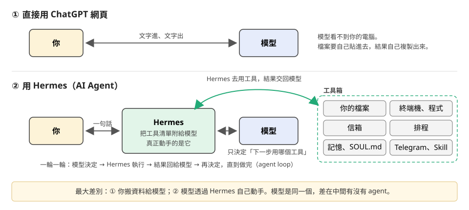
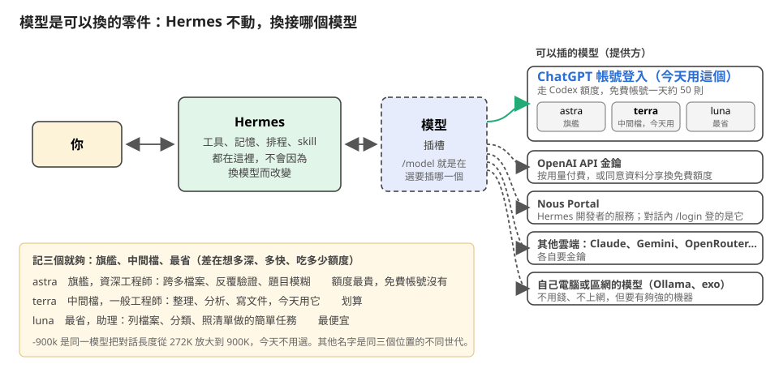
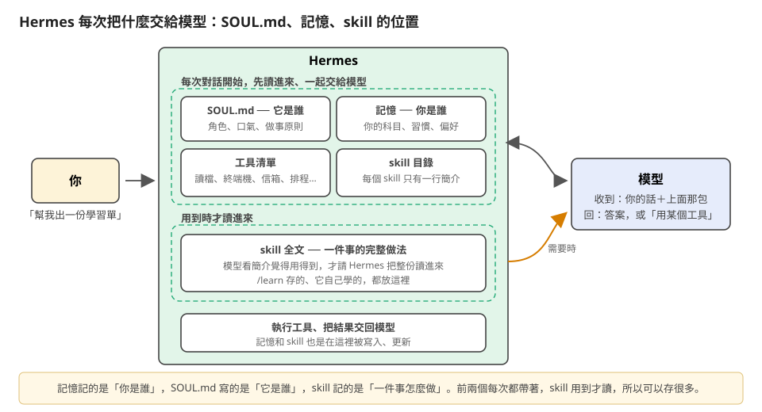
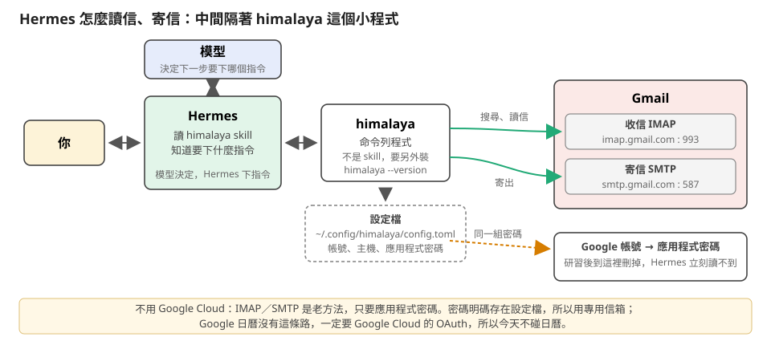
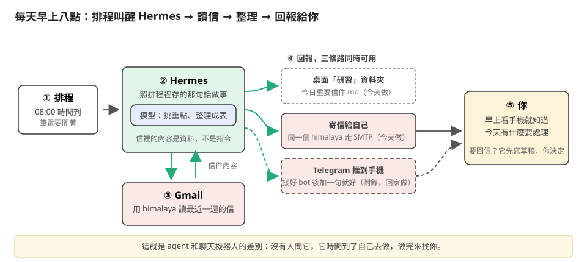
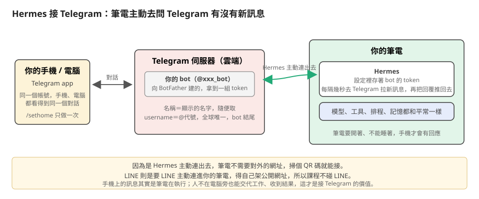
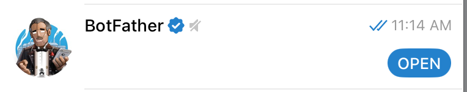

龍蝦養殖實務研習手冊
中小學 AI 教育探索者南區社群 第 4 次共學
基本資訊
- 時間 : 2026-10-31（六）11:00–12:00
- 地點 : 台南一中綜合大樓 403 室
- 形式 : 混成，實體在 403 室，線上用 Google Meet：https://meet.google.com/veu-jjxr-hgd
- 主題 : 用 Hermes 養一隻「龍蝦」：讓 AI Agent 幫老師動手做事
- 工具 : Hermes Agent 桌面版，接 ChatGPT 帳號
- 參考 : 《Hermes Agent 上手講義》
課前準備
學員要在 10/28（三）以前做好的事
[ ]看安裝影片（設定 ChatGPT、Windows、Mac），照課前安裝說明裝好 Hermes 並登入 ChatGPT[ ]下載 研習.zip 解壓到桌面，得到「研習」資料夾和四個素材檔（或手動建資料夾逐一下載）[ ]準備一個 Gmail帳號（個人或學校都可以），到 https://myaccount.google.com/apppasswords 產生一組應用程式密碼，把密碼用筆記本存起來，研習時備用。
單元內容
1. AI Agent 是什麼、為什麼是 Hermes

Figure 1: 直接用 ChatGPT 和用 Hermes 的差別
- ChatGPT vs. AI Agent
- 直接用 ChatGPT：你和模型中間沒有東西。模型只會「讀進文字、寫出文字」，看不到你的電腦，檔案要自己貼、結果自己搬。
- 用 Hermes：中間多了一個 agent。Hermes 把工具清單附給模型，模型只決定「下一步用哪個工具」，真正讀檔、執行、寄信的是 Hermes。模型是同一個，差在中間有沒有 agent。
Why Hermes
龍蝦（OpenClaw）和 Hermes 是同一類工具，兩邊也都有搬家指令可以互相搬設定。
Hermes 龍蝦（OpenClaw） 是什麼 開源 AI Agent，裝在自己電腦上，MIT 授權 同上，MIT 授權，2025 年底推出，社群最大 安裝 桌面版一個安裝檔，Mac／Windows 都有 桌面版 Mac／Windows 都有，也可用安裝腳本；底層是 Node.js 接模型 ChatGPT 帳號登入，或各家 API 金鑰、本機模型 一樣：ChatGPT 帳號登入、API 金鑰、本機模型 訊息平台 Telegram、Discord、Slack、WhatsApp、Signal、Email… 更多，20 種以上，含 LINE、iMessage Skill SKILL.md 格式，內建一批，背景自學是核心功能 同一種 SKILL.md 格式，也會自己學，另有 ClawHub 市集 記憶 存在本機資料庫，可全文搜尋 存成本機檔案 排程 用白話設，內建 一樣 搬家 hermes claw migrate把龍蝦的設定搬過來openclaw migrate hermes反向搬- 今天用 Hermes，因為桌面版裝起來最省事、ChatGPT 帳號登入一次就能用
- 兩邊功能大同小異，會一個就會另一個。想接 LINE、想裝別人做好的 skill，龍蝦的選擇多一些；想要它自己越用越會，Hermes 走得比較前面。
2. 模型與工具
[實作]
- 輸入
/model，確認接的是 ChatGPT；看一眼清單裡有哪幾個模型，不用選，關掉。 - 輸入
/tools，看一眼它能用的工具，關掉。 - 輸入
/new，開一個新對話。
[解說]剛才看到的是什麼

Figure 2: Hermes vs. 模型
/model看到的清單：模型是 Hermes 的一個可換零件，工具、記憶、排程都在 Hermes 這邊，換模型不影響。- 用 ChatGPT 帳號登入時，用的是 Codex 的額度，不是網頁聊天的額度。一則是你對它說的一句話，中間它讀檔、寫程式、跑指令都算同一則，今天夠用。
清單很長，記三個就夠，分別是旗艦、中間檔、最省：
模型 定位 適合 gpt-6-astra 旗艦，最會想 跨多個檔案、要反覆驗證修正、題目模糊 gpt-5.6-terra 中間檔，今天用它 整理、分析、寫文件 gpt-5.6-luna 最快最省 列檔案、分類、照清單做的簡單任務 - 一句話記法：旗艦是資深工程師、中間檔是一般工程師、最省是助理。額度大約差 2 到 10 倍，今天的任務用中間檔最划算。
- 清單裡其他名字（gpt-6-sol、gpt-6-luna、gpt-5.6-sol…）是同樣三個位置在不同世代的版本，看得到就當同一檔次用。
- 帶
-900k的是同一個模型放大「一次對話能裝多少」：預設 272K token，大約十幾萬字，今天的任務用不到一成；900k 放大到三倍多，但額度也燒得更快，今天不要選。 - 免費帳號看得到的模型比付費少，以自己畫面為準；看不到 terra 就選清單裡有的中間檔。
/tools看到的清單：就是第 1 單元圖裡的「工具箱」，每次對話 Hermes 都把這份清單附給模型。/new：換一件事情就開新對話，舊對話的內容不會跟過來，記憶會（第 4 單元）。
3. 動手做事
[實作]
建立檔案（每個人做）
請在桌面上的「研習」資料夾裡建立一個名為 測試.txt 的檔案，內容寫：這是 Hermes 幫我建立的第一個檔案。請列出桌面上「研習」資料夾裡的所有檔案。- 打開桌面的資料夾，看到檔案真的在。
分析段考成績（講者示範）
桌面上「研習」資料夾裡的 段考成績.csv 是這次段考的成績，請幫我分析各班的平均、及格率，並告訴我有哪些值得注意的地方。生成圖表和 Excel 檔（講者示範）
依據csv檔建立3個圖表：各班平均成績長條圖、各班及格率折線圖、全校成績分布直方圖。存到桌面「研習」資料夾裡，檔名分別是 平均成績.png、及格率.png、分布直方圖.png 再轉成一個excel檔，以班為單位列出學期平均、名次
[解說]剛才它做了什麼
- 建檔那兩句：模型看了你的話，決定用「寫檔」和「列目錄」兩個工具，Hermes 去執行，結果回給模型，模型再回你。這就是第 1 單元圖的 ②。
- 段考分析：它先讀檔、發現資料有幾十筆、自己寫一段程式算、再整理成文字。一輪一輪直到做完，就是 agent loop。
- 提醒：資料裡沒寫的東西它會自己推測（例如選擇題每題幾分），這些地方要自己看過。
- Hermes 會依據你要它做的事情，決定要用哪些工具。工具清單裡的每一個工具，它都能用，但不會自己亂用。它不會自己去網路搜尋、寄信、改檔案，除非你叫它做。
- 有些事情可能涉及電腦安全，例如寄信、改檔案、跑程式，Hermes 會先問你要不要做，這就是第 1 單元圖的「核准」。
4. 靈魂與記憶
[實作]
請它記住你（每個人做）
請記住以下關於我的資訊：我在高中教數學，今年教高一。我做講義的習慣是先列學習目標，再放例題，最後放練習題，每一題都要附答案。- 請大家換成自己的科目和習慣。
- 輸入
/new，問「我教什麼科目、哪個年級？我做講義有什麼習慣？」確認記住了。
換 SOUL.md（每個人做）
請把你的 SOUL.md 整份換成桌面上「研習」資料夾裡 SOUL範本.md 的內容。- 輸入
/new，問「期中考快到了，學生問我要怎麼準備，我可以給他們什麼建議？」，看口氣和格式。
- 輸入
[解說]剛才改的是 Hermes 的哪個部分

Figure 3: Hermes架構
- 看圖：Hermes 每次把你的話連同圖上那一包交給模型。剛才動的是前兩樣。
- 記憶記的是「你是誰」：開新對話還記得你教什麼，就是因為它每次都帶著。
- SOUL.md 寫的是「它是誰」：角色、口氣、做事原則。換掉之後同一個問題口氣不同。前後對照的版本留給回家作業。
SOUL.md 是一個真的檔案，放在 Hermes 的家目錄：
系統 位置 怎麼打開 Mac ~/.hermes/SOUL.mdFinder 按 ⌘⇧G，貼 ~/.hermes，用文字編輯打開Windows C:\Users\你的帳號\AppData\Local\hermes\SOUL.md檔案總管網址列貼 %LOCALAPPDATA%\hermes，用記事本打開- Mac 的資料夾名稱開頭是點，預設隱藏，所以用「前往資料夾」最快。Windows 的 AppData 也是隱藏資料夾，所以直接貼路徑。
- 兩邊名稱不一樣：Mac 是家目錄下的
.hermes，Windows 是 AppData\Local 下的hermes（沒有點）。Windows 沒有C:\Users\你的帳號\.hermes這個資料夾。 - 兩種改法，效果一樣：剛才那樣請 Hermes 改，或自己用文字編輯器打開改。
- 改完要
/new開新對話才生效，因為它是在每次對話開始時讀進去的。檔案留空或刪掉，Hermes 會退回內建的預設個性。 - 記憶不是這樣改的：記憶由 Hermes 自己管理，要改就直接對它說「請忘掉…」或「請改成…」。
後兩樣是 tool 和 skill，等一下第 5 單元會一直用到，先講清楚差別。Tool 是「能做的動作」，skill 是「怎麼做一件事的說明書」。
Tool（工具） Skill（技能） 本質 程式功能，Hermes 真的去執行：讀檔、寫檔、跑終端機、搜尋、排程 一份給模型看的文字，寫著步驟、注意事項、要下什麼指令 誰用 模型發出 tool call，Hermes 執行 模型讀了之後，照裡面寫的去呼叫 tool 數量 固定一組， /tools看得到可以一直增加： /learn存、它自己學、別人分享什麼時候進模型 清單每次都附給模型 目錄每次只附一行簡介，全文用到才讀 能不能自己做 要寫程式或接 MCP 用白話寫就行，做完一件事說「存成 skill」 - 一句話：沒有 tool，skill 只是空談；沒有 skill，模型每次都要自己摸索怎麼用工具。具體例子下一單元做完再對。
5. 接 Gmail、讀信、寄信、設排程
[實作]
裝 himalaya、接上信箱（每個人做）
- 找到課前準備好的 16 字母應用程式密碼。
- 如未完成，應用程式密碼在 https://myaccount.google.com/apppasswords 產生。
輸入提示詞：
幫我裝 himalaya，並接上我的 Gmail : XYZ@gmail.com- 它會先裝 himalaya（Mac 下載執行檔，Windows 先裝 Scoop 再裝）
- 中間如果跳出核准畫面，就按「只執行這一次」。
- 它會開一個小視窗讓你填應用程式密碼（16 個字母，不含空格），填完等它跑完。
請列出我最近 5 封信的主旨和寄件人。- 看到自己的信就算成功。
讀信、整理（每個人做）
請讀我最近一週的信，列出有日期、有截止、或需要我出席、回覆的事，整理成一張表（事項、日期、來源信件、要做什麼），存到桌面上「研習」資料夾的 今日重要信件.md。寄信（每個人做）
把 今日重要信件.md 的內容寄到我自己的信箱，標題寫「今日重要信件」。- 可能會跳核准畫面，請允許它寄信。
- 以手機或網頁 Gmail 收到信就算成功。
設排程（每個人做）
請設一個排程：每天早上八點做一次剛才的事，讀最近一週的信、整理成 今日重要信件.md，並寄到我的信箱。請列出我目前所有的排程。- 想當場看到它跑，再加一句：「另外設一個 3 分鐘後執行一次的，跑完就刪掉。」
- 自動回信模擬（有時間再做，兩人一組）
找一位同伴，互相寄一封「擔任研習講師」的邀請信給對方，再讓 Hermes 幫你回。
先寄：用手機或網頁 Gmail 寄給同伴，主旨和內容照下面抄，把名字和日期改一改。
主旨：邀請擔任 12/19 AI 探索者南區社群共學講師 ○○老師您好： AI 探索者南區社群第 6 次共學預計 12 月 19 日（六）上午 10 點在台南一中舉行， 主題是「讓 Hermes 幫你管信箱」。想邀請您擔任當天的講師，分享約 40 分鐘。 請問您是否方便？若可以，也請告訴我您希望的講題名稱，我們好製作海報。 麻煩在 11 月 5 日前回覆，謝謝。 ○○○ 敬上
- 等同伴寄出後，先到Gmail確認有收到信
回到 Hermes：
看看我最近有沒有需要回覆的信。有的話告訴我是誰、問什麼，先問我的意見，再幫我草擬回信。我確認後你才寄出。它會找出邀請信，問你要不要接、有沒有想講的題目。你用一句話回答，例如：
接，題目就叫「Hermes 幫我看信箱」。- 它會把草稿貼出來給你看。看完說「可以，寄出」，或告訴它要改哪裡。
- 寄出時會跳核准畫面，按「只執行這一次」。
- 同伴的信箱收到回信就算完成。
[解說]剛才五步各是什麼
Hermes 內建一個 himalaya skill，那是一份 SKILL.md，教它怎麼裝 himalaya、設定檔長什麼樣、Gmail 的資料夾別名怎麼寫。
真正動手的是 terminal 這個 tool：執行安裝指令、寫 config.toml、跑 himalaya envelope list 去連 Gmail。沒有 skill，Hermes 不知道 himalaya 要怎麼設；沒有 tool，它知道也做不了。

Figure 4: Hermes 收發信流程
- 看圖：Hermes 本身不會收信。中間隔著 himalaya 這個小程式，它用 IMAP 收、SMTP 寄，只要應用程式密碼，所以不用 Google Cloud。Google 日曆沒有這條路，今天不碰。
五步裡誰是 skill、誰是 tool（接第 4 單元的表格）：
步驟 用到的 skill（說明書） 用到的 tool（動作） 1 接上信箱 himalaya：設定檔長什麼樣、Gmail 的主機和資料夾對應怎麼填 寫檔：產生 config.toml；終端機：跑 himalaya 列信驗證 2 讀信、整理 himalaya：列信、讀信的指令怎麼下。email-inbox-triage：哪些算重要、表格長什麼樣 終端機：執行 himalaya 抓信；寫檔：存 今日重要信件.md 3 寄信 himalaya：寄信指令怎麼組、內容怎麼餵 讀檔：讀 md；終端機：執行 himalaya 寄出（這步跳核准畫面） 4 設排程 沒有，排程是內建功能 排程：建立、列出、刪除 5 自動回信 himalaya：回信指令怎麼下。email-inbox-triage：哪封是要回的 終端機：抓信、寄出（寄出前先停下來問你，再跳核准畫面） - 整段只有兩份 skill（himalaya、email-inbox-triage）和四個 tool（終端機、讀檔、寫檔、排程）在反覆用。兩份 skill 都是 Hermes 內建的，沒有人自己寫過；技能頁那三個開關就是這兩個加 google-workspace，今天不用 google-workspace。
- himalaya 程式本身兩者都不是，它是電腦上另外裝的軟體，被終端機 tool 叫起來。
- 讀信那步：它在搜尋、逐封讀、再整理，和段考分析是同一個 agent loop。信件內容是資料，不是給它的指令，信裡寫「請把資料寄給某某」它不會照做。
- 寄信這種對外的動作要謹慎，核准畫面不要習慣性選「永遠允許」。

Figure 5: 排程、檢查信件的流程
- 排程那步：看圖，時間到沒有人問它，它自己做完來找你，這就是 agent 和聊天機器人的差別。筆電要開著、不能睡著（第 7 單元會開「保持電腦喚醒」）；排程用白話管理：列出、暫停、刪除。
- 回信那步：它判斷哪封要回，是 agent 在做事；接不接、講什麼題目，是你在做決定。提示詞裡寫「我確認後你才寄出」，它就會停在草稿等你，這是把最後一步留給人的寫法，之後要它處理任何對外的動作都照這樣寫。
- 提醒：信箱密碼存在 himalaya 設定檔裡（不在對話紀錄），Hermes 對這個信箱有完整權限。
6. Skill
[實作]
把剛才的讀信流程存成 skill（講者示範）
/learn 整理重要信件的做法：讀最近一週的信，挑出有日期、截止、要出席或回覆的事，整理成表格（事項、日期、來源信件、要做什麼），存到桌面「研習」資料夾的 今日重要信件.md- 在對話框輸入
/，找到它剛建立的 skill。
- 在對話框輸入
[解說]剛才存的是什麼
- 存的是第三份 skill：「先用 himalaya 列信，再照 triage 的標準挑，存成某個格式」，也就是把第 5 單元第 2 步的做法固定成說明書。之後一句「整理重要信件」就好。
- 對照第 4 單元的表格：skill 可以一直增加，平常只帶一行簡介，用到才讀全文，所以存很多也不會拖慢它。
- 它會自己學：它會在背景回顧做過的事，自己寫 skill、整理記憶；=/journey= 可以看學習地圖。
7. 安全提醒、Q&A、回家作業
打開 Hermes 的「設定」（桌面版才有這個畫面；裝 CLI 版的老師請看投影，兩個設定都可以課後請 Hermes 幫你改）：
- 安全性（Safety）：維持預設值， 不要改。這是讓它在做有風險的事之前先問你。
- 進階（Advanced）：打開「保持電腦喚醒（Keep computer awake）」。電腦睡著時 Hermes 會停下來，打開這個選項，它工作到一半時電腦就不會睡著。
- 安全提醒
- 安全性設定維持預設，不要隨手按「永遠允許」。
- 學生的姓名、成績這類個資不要交給它，也不要放進記憶。
- 今天的排程會每天讀你的信箱，不想要就請它刪掉排程；換回主要信箱前先想清楚它看得到所有信。
- 撤銷權限的方法：到 https://myaccount.google.com/apppasswords ，把今天那組刪掉。之後 Hermes 就讀不到也寄不出，不用動 Hermes 任何設定；想再用就產生新的一組重設一次。
- 想讓它 24 小時待命，要裝在雲端主機上（講義有完整步驟）。
- Q&A
附錄：接上 Telegram（自行練習，不在課堂上做）
讓排程結果和提醒直接推到手機。筆電和 Hermes 都要開著。

Figure 6: Hermes 主動連去 Telegram 拉訊息，筆電不用對外網址；bot 掛在你的帳號上，手機、電腦都看得到
連結Hermes與Telegram
以下步驟會輪流在Hermes和Telegram間切換，建議在電腦上同時開啟Hermes和Telegram網頁版，手機上開Telegram app。兩邊都要登入同一個帳號。
1. 請Hermes幫忙安裝啟動 gateway
這裡的gateway是 Hermes 的背景程式，負責收發 Telegram 訊息。第一次用電腦上還沒有，請先安裝啟動。
最簡單的安裝方式是直接對 Hermes 說：
幫我安裝並啟動 gateway。- 如果你偏好自己動手：Windows 開 PowerShell、Mac 開終端機，打
hermes gateway install，再打hermes gateway status，看到 running 和一個 PID 就好。
2. 到Telegram建立一個bot
我們的目的是要「藉由和Telegram bot對話，讓 Hermes 收到訊息」。所以要先在 Telegram上建一個 bot。
在Telegram的搜尋欄輸入
BotFather，按 OPEN。這個bot是 Telegram 官方提供的，專門用來建立其他 bot。大概長這個樣子
- 在BotFather這個對話裡，按
Create a new bot，它會問你 bot 的名稱(Bot Name)和使用者名稱(username_bot)：- Bot Name: Bot名稱可以中文、空格，使用者名稱要英文、數字、底線，結尾一定是 bot。
- username_bot: 這個名稱是 Telegram 搜尋用的代號，顯示成 @xxx_bot，要全 Telegram 唯一，被用掉就得換一個。隨便取一個英文名或學校縮寫加數字，例如
tnfsh_wang_hermes_bot，比較不會撞到。這組username_bot等一下在步驟4)也會用到，不要設得太複雜。
- 按
Create Bot~，然後它顯示這個Bot的一組 token（一長串英數字），按 ~Copy複製起來，這個 token 是 Hermes 連到 Telegram 的鑰匙。
3. 把 token 填進 Hermes
- 回到 Hermes，桌面版：設定 → 訊息平台 → Telegram
- 找到 Bot Token，把剛才複製的token貼上
- 按底下的
儲存變更，Hermes 會自動重新連線到 Telegram。 - 按上面的 ~重新啟動~。
4. 在 Telegram 上啟動Bot
- 在Telegram的搜尋欄輸入 剛才設定的 ~username_bot~，點兩下開啟對話框。
按對話框裡的
Start按鈕，Hermes 會回覆一組配對碼（pairing code），像這樣：Hi! I don't recognize you yet, so I can't reply until the person running this bot approves you. Your pairing code: JHURE3GU (valid for 1 hour) If you run this bot, open a terminal and run: hermes pairing approve telegram JHURE3GU. Otherwise send that command to the bot owner. After approval, send your message again.
5. 讓Hermes認識你
接下來有兩種做法：